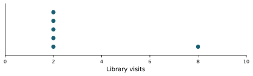
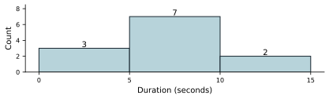
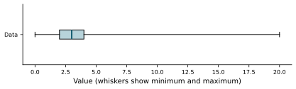
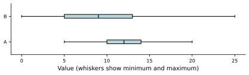

Teaching / Test banks and answer keys
Unit 1: Collecting and describing data Chapters 1-2 · 100 questions · Four-function calculator allowed
Choose one answer. Reveal feedback after trying the question. All numerical scenarios are illustrative. The full bank and explanations are available for study; Chapter 9 is not tested.
Download printable PDF with answer key
Skill group All ten groups Sampling scope and variables Sampling design and bias Study design and evidence Frequencies and meaningful comparisons Reading displays Median, quartiles, and box plots Mean, weights, and changes Shape and outlier effects Spread and transformations Comparing distributions and summaries Reveal all answers 100 questions
U1-G01: Sampling scope and variables
U1-001. A library surveys only people entering the library to estimate how often all students visit. What is the main concern? The sample must be too small. Randomly ordering the responses removes the concern. Students who never visit are excluded. Every recorded visit count is wrong. Slides 1.1, page 21: A question of scope · evaluate
Reveal answer and explanation C. Students who never visit are excluded.
Selection excludes a relevant part of the population, regardless of sample size.
U1-002. A random sample of 80 enrolled students reports 30% support for later hours. Which conclusion is justified? Exactly 24 students in the entire college support later hours. Exactly 30% of all students support later hours. 30% describes the sample and estimates population support. The population percentage must exceed 30%. Slides 1.1, page 3: Inferential statistics · interpret
Reveal answer and explanation C. 30% describes the sample and estimates population support.
A sample result is evidence about a population, not an exact census result.
U1-003. A database codes printer brands as 1, 2, and 3. Why would averaging these codes be misleading? The largest code is always the most common brand. The numbers are labels; recoding them could change the mean. Every numerical entry measures an amount. Brand codes cannot be counted. Slides 1.2, page 9: Numbers as labels · evaluate
Reveal answer and explanation B. The numbers are labels; recoding them could change the mean.
Arithmetic on arbitrary labels does not describe a meaningful numerical quantity.
U1-004. Exact wait times are replaced by short, medium, and long categories. What information is lost? Whether any observations exist. The number of observations. The ordering of the three categories. The exact differences between wait times. Slides 1.2, page 10: Numbers recoded as categories · compare
Reveal answer and explanation D. The exact differences between wait times.
Ordered categories retain rank information but lose exact numerical distances.
U1-005. A survey records whether each student uses a service. Which summary directly answers how common use is? The mean student ID. The total of category labels chosen arbitrarily. The largest student ID. The proportion of students reporting use. Slides 1.1, page 23: The terms in a proportion study · interpret
Reveal answer and explanation D. The proportion of students reporting use.
A yes/no question is naturally summarized by its use proportion.
U1-006. Campus A has 30 users among 60 students; campus B has 40 among 100. Which has the higher use rate? Campus B. Counts alone prove campus B has the higher rate. They have equal rates. Campus A. Slides 1.2, page 16: Comparing different totals · calculate
Reveal answer and explanation D. Campus A.
The rates are 50% and 40%; denominators matter.
U1-007. A timer reports durations to the nearest second. What follows about the underlying duration? It is a categorical label. It must change only in whole seconds. It cannot be less than one second. It may vary continuously despite rounded records. Slides 1.2, page 4: Continuous data · interpret
Reveal answer and explanation D. It may vary continuously despite rounded records.
Recording precision does not make the underlying measurement discrete.
U1-008. A dot plot has five dots at 2 visits and one dot at 8 visits. What does the stack at 2 mean? 
One student reported 10 visits. Five students reported 8 visits each. The average is necessarily 2. Five students reported 2 visits each. Slides 1.1, page 24: Dot plots · interpret
Reveal answer and explanation D. Five students reported 2 visits each.
Each dot represents an observation; a stack records repeated values.
U1-009. Two properly drawn random samples give support rates of 42% and 47%. Which explanation is reasonable? Random samples always have equal percentages. Chance sampling variation can produce different rates. The larger percentage must be the true population rate. Different rates prove one survey was fabricated. Slides 1.2, page 28: Sampling variation · evaluate
Reveal answer and explanation B. Chance sampling variation can produce different rates.
Random sampling does not eliminate ordinary variation between samples.
U1-010. A sample's mean file size is 18 KB. The study aims to estimate the mean across all files on a server. What does 18 KB represent? The exact population mean regardless of selection. A guaranteed maximum file size. An estimate based on the sampled files. The size of every file on the server. Slides 1.1, page 22: The terms in a mean study · interpret
Reveal answer and explanation C. An estimate based on the sampled files.
A sample mean summarizes its observed files and estimates a population mean.
U1-G02: Sampling design and bias
U1-011. A college wants each academic program represented in a survey. Which plan best achieves that directly? Randomly sample students within every program. Invite only students who previously complained. Survey only the largest program. Select the first students entering one room. Slides 1.2, page 20: Stratified sampling · evaluate
Reveal answer and explanation A. Randomly sample students within every program.
Sampling within each program ensures representation from those groups.
U1-012. Plan A samples students from every building. Plan B randomly chooses two buildings and surveys everyone there. What distinguishes Plan B? It guarantees all possible student samples are equally likely. It studies all students in selected groups. It necessarily includes every building. It selects some students from every group. Slides 1.2, page 25: Strata or clusters? · compare
Reveal answer and explanation B. It studies all students in selected groups.
The second plan selects whole groups, rather than sampling within every group.
U1-013. A systematic sample starts at ID 3 and takes every tenth ID. Which IDs appear first? 3, 6, 9. 3, 13, 23. 10, 20, 30. 3, 10, 20. Slides 1.2, page 22: Systematic sampling · calculate
Reveal answer and explanation B. 3, 13, 23.
Add ten to the starting ID at each selection.
U1-014. A roster repeats a ten-person pattern, with every tenth entry a team leader. Why could taking every tenth entry be problematic? A larger interval always makes selection random. Team leaders cannot answer surveys. The sampling interval can align with the repeating pattern. Systematic selection always includes everyone. Slides 1.2, page 22: Systematic sampling · evaluate
Reveal answer and explanation C. The sampling interval can align with the repeating pattern.
Periodicity in the list can produce a systematically unrepresentative sample.
U1-015. Which change best addresses a poll that includes only frequent library users? Collect ten times as many frequent-user responses. Shuffle the existing responses. Broaden selection to include nonusers. Report more decimal places. Slides 1.2, page 31: Sample size and precision · compare
Reveal answer and explanation C. Broaden selection to include nonusers.
Correcting coverage is more important than enlarging the same biased sample.
U1-016. An open online poll receives responses mainly from students strongly opposed to a fee. What is the concern? The percentage becomes exact with 100 responses. An online survey necessarily has no data. Willingness to respond may depend on opinion. All random samples favor strong opinions. Slides 1.2, page 24: Voluntary response · interpret
Reveal answer and explanation C. Willingness to respond may depend on opinion.
Voluntary response can overrepresent people with especially strong views.
U1-017. Students are randomly invited, but only 15% respond. Which concern remains? The invitations were necessarily nonrandom. Random invitation guarantees representative responses. Respondents may differ from nonrespondents. Low response proves every answer false. Slides 1.2, page 34: Nonresponse · evaluate
Reveal answer and explanation C. Respondents may differ from nonrespondents.
Random invitation does not eliminate nonresponse bias.
U1-018. Which wording is most neutral for a parking survey? Do you support the proposed parking fee? Do you oppose the helpful parking fee? Do you support the unfair parking fee? Why do you dislike the parking fee? Slides 1.2, page 35: Question wording · evaluate
Reveal answer and explanation A. Do you support the proposed parking fee?
Neutral wording avoids suggesting the desired evaluation.
U1-019. Students rate a service while its manager watches. Compared with anonymous responses, what might happen? The manager's presence guarantees accuracy. Sample size automatically doubles. Students may avoid negative ratings. Every rating must become negative. Slides 1.2, page 36: Undue influence · predict
Reveal answer and explanation C. Students may avoid negative ratings.
Pressure or perceived consequences can influence responses.
U1-020. A selected student's name is removed before the next random draw. What changes? That student cannot be selected again. Selection has become a census. The same name must be selected next. Every remaining student becomes impossible to select. Slides 1.2, page 27: Sampling without replacement · predict
Reveal answer and explanation A. That student cannot be selected again.
Sampling without replacement prevents repeats of the selected individual.
U1-G03: Study design and evidence
U1-021. Students choosing tutoring score higher. Why is a causal claim uncertain? Motivation may affect both tutoring attendance and scores. A larger score difference removes all confounding. Tutoring can never help students. Any score difference proves a tutoring effect. Slides 1.4, page 7: Lurking variables · evaluate
Reveal answer and explanation A. Motivation may affect both tutoring attendance and scores.
A self-selected comparison can mix tutoring effects with other differences.
U1-022. Volunteers are randomly assigned to two practice formats. What does random assignment primarily help with? Eliminating the need to measure outcomes. Guaranteeing identical scores in both groups. Ensuring volunteers represent all students. Balancing other influences between treatment groups. Slides 1.4, page 9: Random assignment · interpret
Reveal answer and explanation D. Balancing other influences between treatment groups.
Random assignment helps support causal comparisons; it does not ensure population representativeness.
U1-023. Randomly assigned groups have slightly different initial mean scores. What follows? The assignment was necessarily dishonest. Random assignment requires exact matching of every score. Chance imbalance can occur despite random assignment. The study must have used a census. Slides 1.4, page 10: Chance imbalance · evaluate
Reveal answer and explanation C. Chance imbalance can occur despite random assignment.
Random assignment balances influences in expectation, not perfectly in each experiment.
U1-024. One teacher uses format A and another uses format B. Why is a score difference hard to attribute? Teacher and format effects are mixed together. There are too many treatment groups to compare. Scores cannot be numerical. Different teachers guarantee format A is better. Slides 1.4, page 8: Confounding · evaluate
Reveal answer and explanation A. Teacher and format effects are mixed together.
The design cannot separate teacher differences from format differences.
U1-025. A grader does not know which practice format each paper's author used. What problem does this reduce? All variation in student ability. The possibility of random assignment. Expectations influencing grading. Students being absent from the population. Slides 1.4, page 15: Blinding · interpret
Reveal answer and explanation C. Expectations influencing grading.
Blinding the grader reduces assessment bias tied to treatment knowledge.
U1-026. A printer study uses only one printer per paper type. Why is that weak evidence? Two observations guarantee a representative result. Printer-specific differences may dominate the comparison. Replication would eliminate all possible errors. Paper type cannot affect printer performance. Slides 1.4, page 17: Replication · evaluate
Reveal answer and explanation B. Printer-specific differences may dominate the comparison.
Replication helps distinguish treatment effects from variation among units.
U1-027. Everyone tries format A first and format B second. What could explain better second scores besides format B? A guarantee of equal prior knowledge. The lack of any treatment order. Random sampling of all students. Practice from the first attempt. Slides 1.4, page 21: Treatment order · evaluate
Reveal answer and explanation D. Practice from the first attempt.
Order and practice can be confounded with format.
U1-028. A well-run randomized experiment finds better results for an app among its volunteers. Which claim needs extra caution? The observed volunteers had different average results. Random assignment helped compare the formats. The study provides evidence about an app effect in this setting. The same effect applies to all students everywhere. Slides 1.4, page 18: Causal conclusions · evaluate
Reveal answer and explanation D. The same effect applies to all students everywhere.
Generalization depends on the volunteers and setting, beyond random assignment.
U1-029. A researcher deletes genuine results that disagree with the desired conclusion. What is the problem? The report no longer fairly represents the collected evidence. A smaller dataset guarantees less bias. Deleting inconvenient values always improves accuracy. Any unusual observation is automatically an error. Slides 1.4, page 28: Honest reporting · evaluate
Reveal answer and explanation A. The report no longer fairly represents the collected evidence.
Valid observations cannot be discarded merely because they are unfavorable.
U1-030. A public dataset includes names beside individual survey answers. Which change best protects privacy while preserving group summaries? Keep names and omit the study methods. Publish only the names. Remove identifying details before sharing. Replace every answer with the overall mean. Slides 1.4, page 27: Privacy · evaluate
Reveal answer and explanation C. Remove identifying details before sharing.
De-identification can preserve useful aggregate evidence while reducing identification risks.
U1-G04: Frequencies and meaningful comparisons
U1-031. Frequencies for 0, 1, 2, and 3 jobs are 2, 3, 4, and 1. How many sessions had at most 1 job? 3. 5. 2. 9. Slides 1.3, page 5: Cumulative relative frequency · calculate
Reveal answer and explanation B. 5.
At most 1 includes the frequencies for both 0 and 1.
U1-032. A table has positive frequency at exactly 2 jobs. How do counts for fewer than 2 and at most 2 compare? At most 2 has the larger count. Neither can be found from exact frequencies. They must be equal. Fewer than 2 has the larger count. Slides 1.3, page 7: At most or less than? · compare
Reveal answer and explanation A. At most 2 has the larger count.
At most includes the observations equal to the cutoff.
U1-033. A cumulative table gives 30% below 5 seconds and 75% below 10 seconds. What percent is from 5 to less than 10? 75%. 45%. 30%. 105%. Slides 1.3, page 12: Recovering interval frequency · calculate
Reveal answer and explanation B. 45%.
Subtract cumulative percentages at the two boundaries.
U1-034. Four mutually exclusive, exhaustive categories have reported proportions 0.20, 0.30, 0.40, and 0.25. What needs checking? Their total exceeds 1. Each category must have proportion 0.25. Proportions must be whole numbers. No category may exceed 0.20. Slides 1.3, page 9: Checking a table · evaluate
Reveal answer and explanation A. Their total exceeds 1.
Exhaustive nonoverlapping categories must have total probability or relative frequency 1.
U1-035. Three reported percentages are 33.3%, 33.3%, and 33.3%. What most reasonably explains the 99.9% total? Missing exactly one participant. Rounding. The data must be fabricated. Overlapping categories are certain. Slides 1.3, page 14: Rounding totals · interpret
Reveal answer and explanation B. Rounding.
Rounding can make displayed percentages differ slightly from 100%.
U1-036. A grouped table reports 12 durations from 5 to less than 10 seconds. Can it tell exactly how many equal 7 seconds? No; exact positions within the interval are hidden. Yes; exactly half must equal 7. Yes; none may equal 7. Yes; all 12 must equal 7. Slides 1.3, page 11: Reading a grouped frequency table · interpret
Reveal answer and explanation A. No; exact positions within the interval are hidden.
Grouping preserves interval counts but loses individual values.
U1-037. Ratings poor, fair, good, excellent are coded 1 through 4. What is safest to infer from the codes? The categories have no order. Each adjacent rating differs by exactly one unit of satisfaction. Excellent ranks above good, but equal numerical gaps are not established. Excellent is exactly twice as favorable as fair. Slides 1.3, page 17: Ordinal level · evaluate
Reveal answer and explanation C. Excellent ranks above good, but equal numerical gaps are not established.
Ordered categories establish rank, not equal measurement distances.
U1-038. A room at 20 degrees Celsius is compared with one at 10 degrees Celsius. Which statement is justified? The first is 10 degrees warmer on that scale. Celsius readings cannot be subtracted. The first is twice as comfortable for every person. The first has twice the absolute temperature. Slides 1.3, page 18: Interval level · evaluate
Reveal answer and explanation A. The first is 10 degrees warmer on that scale.
Celsius supports meaningful differences but its zero is not an absolute zero.
U1-039. Students may use both laptops and tablets. Laptop use is 70%, tablet use 60%. Why is a two-slice pie chart inappropriate? A pie chart requires exactly three categories. Percentages can never exceed 50%. The categories overlap. Device use cannot be counted. Slides 1.2, page 14: Overlapping categories · evaluate
Reveal answer and explanation C. The categories overlap.
Pie slices partition a whole; overlapping memberships are not such a partition.
U1-040. Service A has 10 complaints in 100 jobs; B has 20 in 400 jobs. Which has the lower complaint rate? Service B. The service with fewer complaints must have the lower rate. Service A. They have equal rates. Slides 1.4, page 33: Comparing complaint rates · compare
Reveal answer and explanation A. Service B.
The rates are 5% for B and 10% for A.
U1-G05: Reading displays
U1-041. A stemplot key says stem 2, leaf 5 means 25 KB. Stem 3 has leaves 0, 2, 2. Which values does it show? 3, 0, 2, 2 KB. 300, 320, 320 KB. 30, 32, 32 KB. 30, 32 KB only. Slides 2.1, page 3: Reading the key · interpret
Reveal answer and explanation C. 30, 32, 32 KB.
The key supplies place value and repeated leaves represent repeated observations.
U1-042. A stemplot includes an empty stem 2 between stems 1 and 3. What does that show? All values are exactly 20. There are no values in the twenties. The data were lost. Zero is the only value. Slides 2.1, page 7: An empty stem · interpret
Reveal answer and explanation B. There are no values in the twenties.
An empty stem preserves a visible gap on the numerical scale.
U1-043. Two stemplots use different keys: one leaf unit is 1 second, the other 10 seconds. What must happen before comparing spreads visually? Assume equal stem lengths imply equal spread. Count only the number of stems. Delete repeated leaves. Account for the different numerical scales. Slides 2.1, page 9: Side-by-side stemplots · evaluate
Reveal answer and explanation D. Account for the different numerical scales.
Visual widths are comparable only after accounting for scale.
U1-044. Histogram bins are [0,5), [5,10), [10,15). Where does a duration of exactly 5 belong? None of the bins. Both first and second bins. The second bin. The first bin. Slides 2.2, page 2: Define the intervals · interpret
Reveal answer and explanation C. The second bin.
The left endpoint is included and the right endpoint excluded.
U1-045. Histogram counts are 3 in [0,5), 7 in [5,10), and 2 in [10,15). How many values are below 10? 
7. 10. 2. 12. Slides 2.2, page 7: Read a histogram · calculate
Reveal answer and explanation B. 10.
The first two bins contain all values below 10.
U1-046. A histogram is rebuilt using wider bins. What is likely lost? The numerical nature of the variable. The need for an axis scale. The total number of observations. Fine detail such as small gaps and local peaks. Slides 2.2, page 11: Bin width · predict
Reveal answer and explanation D. Fine detail such as small gaps and local peaks.
Wider bins combine neighboring values and smooth small features.
U1-047. Daily print totals are shown in a histogram instead of a time-series graph. What information is lost? The existence of high totals. Which total occurred on which date. The approximate distribution of totals. The number of daily observations. Slides 2.2, page 24: Distribution or time order? · compare
Reveal answer and explanation B. Which total occurred on which date.
A histogram summarizes the distribution without retaining chronology.
U1-048. A bar graph of counts 98 and 100 starts its vertical axis at 97. What impression might it exaggerate? The size of the difference between the counts. The fact that 98 is below 100. The number of categories. The total number of observations. Slides 2.2, page 27: Misleading vertical scales · evaluate
Reveal answer and explanation A. The size of the difference between the counts.
A truncated baseline can make a small count difference appear visually large.
U1-049. Categories in a bar graph are reordered alphabetically. What changes? The number of observations in each category. Every relative frequency. The display order, but not category frequencies. The most frequent category. Slides 2.1, page 18: Category order · predict
Reveal answer and explanation C. The display order, but not category frequencies.
Changing categorical order does not change the observations.
U1-050. Histogram bins have unequal widths but equal counts. Why can equal raw-count bar heights mislead about concentration? Equal counts require equal widths. Every histogram must be a time series. Wider bins always contain smaller values. The wider bin spreads its count over more numerical space. Slides 2.2, page 25: Unequal widths · evaluate
Reveal answer and explanation D. The wider bin spreads its count over more numerical space.
With unequal widths, density scaling is needed for area to represent frequency fairly.
U1-G06: Median, quartiles, and box plots
U1-051. The ordered data are 2, 4, 4, 7, 20. What is the median? 20. 4. 7. 6. Slides 2.3, page 4: The median · calculate
Reveal answer and explanation B. 4.
The middle observation is the third value, 4.
U1-052. The ordered data are 1, 3, 5, 9. What is the median? 9. 5. 3. 4. Slides 2.3, page 5: An even number of values · calculate
Reveal answer and explanation D. 4.
Average the two middle values, 3 and 5.
U1-053. A score is reported at approximately the 90th percentile. What kind of information does that give? The class mean being 90. That 90% of exam answers were correct. A score of exactly 90 points. Its position relative to other scores. Slides 2.3, page 2: Percentile or percent correct? · interpret
Reveal answer and explanation D. Its position relative to other scores.
A percentile describes relative position, not percentage correct. This question does not require an exact rank, tie rule, or interpolation convention.
U1-054. Q1 is 8 and Q3 is 14. What does the interval 8 to 14 describe approximately? The middle half of observations. The mean's confidence interval. The lowest quarter only. Every observation. Slides 2.3, page 11: Interpret the middle half · interpret
Reveal answer and explanation A. The middle half of observations.
Quartiles bound approximately the middle 50%, with ties and conventions affecting exact counts.
U1-055. Using the reported quartiles, group A has Q1=3, Q3=9; group B has Q1=10, Q3=14. Which has greater IQR? Group A. They are equal. The larger median must determine the IQR. Group B. Slides 2.3, page 10: Interquartile range · calculate
Reveal answer and explanation A. Group A.
Use the reported quartiles: the IQRs are 9-3=6 and 14-10=4. No choice of quartile algorithm is required.
U1-056. A basic box plot reports minimum 0, Q1=2, median 3, Q3=4, maximum 20. Which comparison is supported? 
The plot establishes the exact mean. The lower segment contains no observations. The upper segment must contain three times as many observations. The segment from Q3 to the maximum spans a wider numerical range than the segment from the minimum to Q1. Slides 2.4, page 8: Length is not count · interpret
Reveal answer and explanation D. The segment from Q3 to the maximum spans a wider numerical range than the segment from the minimum to Q1.
Using the displayed summary, the upper segment spans 20-4=16 units and the lower segment spans 2-0=2 units. Segment length describes numerical spread, not an exact observation count; quartile conventions and ties can affect those counts.
U1-057. A box plot has median 6. Can it reveal exactly how many observations equal 5? No; the summary does not retain those exact counts. Yes; half equal 5. Yes; exactly one quarter equal 5. Yes; none equal 5. Slides 2.4, page 10: Within a quarter · evaluate
Reveal answer and explanation A. No; the summary does not retain those exact counts.
A box plot compresses the data into a few summary positions.
U1-058. Two datasets have identical five-number summaries. What follows? Their sample sizes must be identical. They must contain identical observations. Their means must be identical. They can still have different internal distributions. Slides 2.4, page 16: Same summary, different data · compare
Reveal answer and explanation D. They can still have different internal distributions.
Five summary values do not determine all observations.
U1-059. Two reasonable quartile methods give upper outlier fences of 18 and 20 for the same dataset. One observation is 35. Which conclusion agrees with both methods? Only the method with fence 18 flags the observation. The observation is not flagged under either method. The observation must be a recording error. The observation is flagged as unusually high under both methods. Slides 2.3, page 14: At the fence · interpret
Reveal answer and explanation D. The observation is flagged as unusually high under both methods.
The value 35 is well above both reported fences, so choosing between these conventions does not change the flag. An outlier flag alone does not establish a recording error.
U1-060. A modified box plot marks 30 as a separate high outlier. Its upper whisker ends at 18. What does 18 represent? The mean. The upper fence whether observed or not. The maximum of all observations. The largest observed value not flagged as an outlier. Slides 2.4, page 13: The whisker endpoint · interpret
Reveal answer and explanation D. The largest observed value not flagged as an outlier.
Modified whiskers end at observed nonoutlier values; the outlier remains part of the data.
U1-G07: Mean, weights, and changes
U1-061. For 2, 3, 3, 4, 18, how does the mean compare with the median? No comparison is possible without a calculator. The mean is smaller. The mean is larger. They are equal. Slides 2.5, page 11: Compare mean and median · compare
Reveal answer and explanation C. The mean is larger.
The high value pulls the mean above the median of 3.
U1-062. In 2, 3, 3, 4, 18, the 18 is replaced by 180. What happens? The mean increases; the median stays 3. The mean decreases. The median increases more than the mean. Both stay unchanged. Slides 2.5, page 12: Sensitivity to one value · predict
Reveal answer and explanation A. The mean increases; the median stays 3.
The middle position stays the same while the total increases greatly.
U1-063. Most files are small, with a few extremely large files. Which better describes a typical file's size? The maximum. The total size alone. The mean student ID. The median. Slides 2.5, page 13: Choosing a typical value · evaluate
Reveal answer and explanation D. The median.
The median is less pulled by a few large files.
U1-064. A frequency table lists 1 page for 8 jobs and 5 pages for 2 jobs. Why is (1+5)/2 inappropriate for mean pages per job? It ignores how often each value occurs. It counts too many individual jobs. It is always the median. It gives extra weight to 1-page jobs. Slides 2.5, page 15: Why weight the values? · evaluate
Reveal answer and explanation A. It ignores how often each value occurs.
A per-job mean must weight values by their frequencies.
U1-065. Ten jobs average 2 pages; thirty jobs average 6 pages. Where is the combined mean? Between 2 and 6, closer to 6. Above 6. Below 2. Exactly halfway at 4. Slides 2.5, page 19: Combine two groups · compare
Reveal answer and explanation A. Between 2 and 6, closer to 6.
The larger group has more weight in the combined mean.
U1-066. Four jobs have a mean of 5 pages. What is the total number of pages? 9. 20. 5. 1.25. Slides 2.5, page 3: Recover a total · calculate
Reveal answer and explanation B. 20.
Total equals number of observations times their mean.
U1-067. Every recorded duration increases by 3 seconds. What happens to the mean and median? Both multiply by 3. Only the median increases. Only the mean increases. Both increase by 3 seconds. Slides 2.5, page 20: Adding a constant · predict
Reveal answer and explanation D. Both increase by 3 seconds.
A common additive shift moves both centers by that amount.
U1-068. Every size is converted from MB to KB using 1 MB=1,000 KB. What happens to the mean's numerical value? It divides by 1,000. It stays the same. It multiplies by 1,000. It increases by 1,000. Slides 2.5, page 21: Changing units · predict
Reveal answer and explanation C. It multiplies by 1,000.
A unit conversion scales every observation and its mean equally.
U1-069. A mean is estimated from grouped intervals using midpoints. Why is it generally approximate? Frequencies cannot be used in means. The sample size is necessarily unknown. Midpoints are never numerical values. Actual observations need not equal the interval midpoints. Slides 2.5, page 18: Exact or estimated? · evaluate
Reveal answer and explanation D. Actual observations need not equal the interval midpoints.
Grouping hides exact values, so midpoint weighting replaces them with approximations.
U1-070. A dataset has mean 10. One new observation equal to 10 is added. What happens to the mean? It becomes zero. It stays 10. It falls. It rises. Slides 2.5, page 1: The mean · predict
Reveal answer and explanation B. It stays 10.
Adding a value equal to the current mean preserves that mean.
U1-G08: Shape and outlier effects
U1-071. Data are 0, 8, 9, 9, 10. Which center is lower? The maximum. The mean. The median. They are equal. Slides 2.6, page 8: Mean and a left tail · compare
Reveal answer and explanation B. The mean.
The isolated low value pulls the mean below the median of 9.
U1-072. Most waits are short, but a few extend far toward large values. What determines the skew direction? The side with the tallest bar alone. The long tail toward large values. The number of categories. Whether the variable uses minutes. Slides 2.6, page 11: Skew names the tail · interpret
Reveal answer and explanation B. The long tail toward large values.
Skew is named for the direction of the long tail.
U1-073. Data are 2, 4, 6, 8, 10. How do mean and median compare? The median is the maximum. The mean is below the median. They are equal. The mean exceeds the median. Slides 2.6, page 9: A symmetric example · compare
Reveal answer and explanation C. They are equal.
The values balance symmetrically around 6.
U1-074. A distribution has equal peaks near 2 and 8 and is symmetric around 5. What follows? Symmetry does not require a single peak. A mean cannot exist. Its mode must be uniquely 5. It must be right-skewed. Slides 2.6, page 15: Symmetry without one peak · evaluate
Reveal answer and explanation A. Symmetry does not require a single peak.
A symmetric distribution can be bimodal with its center between peaks.
U1-075. Add 10 to every value in a right-skewed dataset. What happens to its shape? It becomes left-skewed. It remains right-skewed. It becomes symmetric. Its tail disappears. Slides 2.6, page 17: A shift and shape · predict
Reveal answer and explanation B. It remains right-skewed.
Translation moves locations without changing shape.
U1-076. Remove 100 from 1, 2, 3, 4, 100. What happens to the mean and median? The mean increases and median decreases. The median increases and mean stays unchanged. Both decrease, with a much larger decrease in the mean. Both stay unchanged. Slides 2.5, page 12: Sensitivity to one value · predict
Reveal answer and explanation C. Both decrease, with a much larger decrease in the mean.
The mean changes from 22 to 2.5; the median changes from 3 to 2.5.
U1-077. Data 4, 5, 6 become 4, 5, 60. What happens to spread? Standard deviation becomes zero. Range decreases. Range and standard deviation both increase. Only the mean changes. Slides 2.7, page 18: One value changes · predict
Reveal answer and explanation C. Range and standard deviation both increase.
Moving one endpoint far away increases both overall range and squared deviations.
U1-078. Someone claims mean > median is a universal proof that any dataset is right-skewed. What is the best response? It is a useful common pattern, not a universal characterization. It proves every observation exceeds the median. It proves the dataset is normal. It guarantees exactly one mode. Slides 2.6, page 14: A common pattern · evaluate
Reveal answer and explanation A. It is a useful common pattern, not a universal characterization.
Shape and centers are related, but the ordering alone is not a universal shape theorem.
U1-079. A recorded file size is far above the rest. What should happen before deleting it? Keep it only if the mean equals the median. Delete it because all outliers are mistakes. Check whether it is an error or a genuine unusual file. Replace it with zero automatically. Slides 2.1, page 10: Keeping an unusual value · evaluate
Reveal answer and explanation C. Check whether it is an error or a genuine unusual file.
An unusual value can be valid and informative; deletion needs a defensible reason.
U1-080. Notebook colors are blue, blue, black, red. Which statement meaningfully summarizes a typical category? The median is 2.5 colors. Blue is the most common color. The standard deviation of color names is 1. The mean color is 2. Slides 2.5, page 10: A categorical mode · interpret
Reveal answer and explanation B. Blue is the most common color.
A most-common category is meaningful without arbitrary arithmetic on labels.
U1-G09: Spread and transformations
U1-081. Compare 4, 5, 6 with 1, 5, 9. Which statement is correct? The first has more spread. They have equal means, but the second has more spread. Equal means imply equal spread. The second has a larger mean. Slides 2.7, page 1: Spread · compare
Reveal answer and explanation B. They have equal means, but the second has more spread.
Both center at 5; the second has observations farther from the center.
U1-082. A dataset's standard deviation is zero. What must be true? All observations are zero. All observations are equal. There is one high outlier. The mean is zero. Slides 2.7, page 17: Zero standard deviation · interpret
Reveal answer and explanation B. All observations are equal.
Zero spread requires identical values, which need not be zero.
U1-083. Add 7 seconds to every duration. What happens to standard deviation? It increases by 7 seconds. It becomes zero. It is unchanged. It multiplies by 7. Slides 2.7, page 19: Adding a constant · predict
Reveal answer and explanation C. It is unchanged.
Distances from the shifted mean stay the same.
U1-084. Multiply every observation by 3. What happens to standard deviation? It increases by 3. It multiplies by 3. It multiplies by 9. It stays unchanged. Slides 2.7, page 20: Scaling every value · predict
Reveal answer and explanation B. It multiplies by 3.
Standard deviation scales like the observations; variance scales by the square.
U1-085. Durations are in seconds. Which units belong to variance and standard deviation, respectively? Seconds squared; seconds. Percent; percent. Seconds; no units. Seconds; seconds squared. Slides 2.7, page 14: Units of spread · interpret
Reveal answer and explanation A. Seconds squared; seconds.
Variance averages squared distances; standard deviation takes the square root.
U1-086. Why is adding signed deviations from the sample mean unsuitable as a spread measure? All deviations are positive. Positive and negative deviations cancel. It necessarily counts each value twice. The mean is always the largest value. Slides 2.7, page 5: Sum of deviations · evaluate
Reveal answer and explanation B. Positive and negative deviations cancel.
Signed deviations sum to zero even when observations are widely spread.
U1-087. A sample has 8 observations. Its sum of squared deviations is already supplied. Which divisor gives sample variance? 64. 8. The sample mean. 7. Slides 2.7, page 10: Choose the denominator · interpret
Reveal answer and explanation D. 7.
Sample variance uses n-1, unlike the population calculation with all population members.
U1-088. A file is 60 KB; its group has mean 50 KB and SD 5 KB. How far above the mean is it? 10 standard deviations. 0.5 standard deviations. 2 standard deviations. 12 standard deviations. Slides 2.7, page 21: Distance in standard deviations · calculate
Reveal answer and explanation C. 2 standard deviations.
The difference is 10 KB, or twice the 5 KB standard deviation.
U1-089. Score A is 10 above its mean with SD 5; score B is 12 above its mean with SD 12. Which is relatively farther above its group mean? They are equally far. The larger raw score difference always wins. B. A. Slides 2.7, page 24: Compare relative positions · compare
Reveal answer and explanation D. A.
A is 2 SD above its mean; B is 1 SD above.
U1-090. Two services have mean wait 10 minutes, but SDs 1 and 6 minutes. What does the larger SD suggest? Every wait is six minutes longer. Waits vary more around the same mean. The mean must actually be 16 minutes. The median must be 6 minutes. Slides 2.7, page 15: Interpret a standard deviation · interpret
Reveal answer and explanation B. Waits vary more around the same mean.
Standard deviation describes variation around a center, not an extra amount added to it.
U1-G10: Comparing distributions and summaries
U1-091. Box plot A has median 12, IQR 4; B has median 9, IQR 8. Which statement is supported? 
Every value in A exceeds every value in B. B has higher median and smaller spread. A has lower median and larger spread. A has higher median and smaller middle-half spread. Slides 2.4, page 14: Compare centers · compare
Reveal answer and explanation D. A has higher median and smaller middle-half spread.
The summaries compare centers and middle spreads, not every pair of observations.
U1-092. Every value in a dataset increases by 5. What happens to the IQR? It increases by 5. It becomes the median. It doubles. It stays unchanged. Slides 2.4, page 15: Compare middle spreads · predict
Reveal answer and explanation D. It stays unchanged.
Both quartiles shift by 5, so their difference is unchanged.
U1-093. Datasets share min=0 and max=100, but have different IQRs. What follows? Equal ranges do not imply equal middle-half spread. Their standard deviations must be identical. Their observations must be identical. Their medians must be identical. Slides 2.4, page 6: Read the range · compare
Reveal answer and explanation A. Equal ranges do not imply equal middle-half spread.
Range uses endpoints while IQR uses quartile positions.
U1-094. All ten observations equal 5, so their median is 5. Are exactly half strictly below the median? Yes; every median splits strict inequalities equally. No; a median cannot exist with ties. Yes; exactly five are below 5. No; none are strictly below it. Slides 2.3, page 22: Ties in percentile statements · evaluate
Reveal answer and explanation D. No; none are strictly below it.
Ties mean a median need not have half the values strictly below it.
U1-095. Digital purchases rise from 40 of 100 to 60 of 200. What happened? Both count and share fell. The count rose, but the share fell. The count fell, but the share rose. Both count and share rose. Slides 2.2, page 29: Comparing pie charts · compare
Reveal answer and explanation B. The count rose, but the share fell.
The counts rise from 40 to 60 while shares fall from 40% to 30%.
U1-096. A bell-shaped distribution has mean 20 and SD 2. Approximately which interval contains 95%? 16 to 24. 18 to 22. 20 to 24. 0 to 20. Slides 2.7, page 28: Empirical rule · interpret
Reveal answer and explanation A. 16 to 24.
The empirical rule uses about two standard deviations on each side for a bell-shaped distribution.
U1-097. A distribution's shape is unknown. Which claim about the fraction within 2 SD is justified by Chebyshev's bound? At least 75%, assuming a finite nonzero variance. Exactly 95%. Exactly 68%. At most 25%. Slides 2.7, page 27: Chebyshev’s bound · evaluate
Reveal answer and explanation A. At least 75%, assuming a finite nonzero variance.
Chebyshev gives a general lower bound; the empirical rule needs an appropriate bell shape.
U1-098. A sample variance is 9 minutes squared. What is its standard deviation? 3 minutes. 3 minutes squared. 9 minutes. 81 minutes. Slides 2.7, page 8: Sample standard deviation · calculate
Reveal answer and explanation A. 3 minutes.
Standard deviation is the square root of variance and returns to the original units.
U1-099. A dataset has mean 8. One observation below 8 is removed. What happens to the mean of the remaining values? It decreases. It increases. It becomes the removed value. It always stays 8. Slides 2.5, page 1: The mean · predict
Reveal answer and explanation B. It increases.
Removing a below-average observation raises the remaining average.
U1-100. A box plot flags an unusually large print job. Which conclusion is warranted? The job must be fraudulent. The value must be deleted before any summary. The job deserves investigation; the plot alone does not prove error. The rest of the data must be normal. Slides 2.4, page 18: Investigate an outlier · evaluate
Reveal answer and explanation C. The job deserves investigation; the plot alone does not prove error.
An outlier flag identifies unusual position under a rule, not its cause.